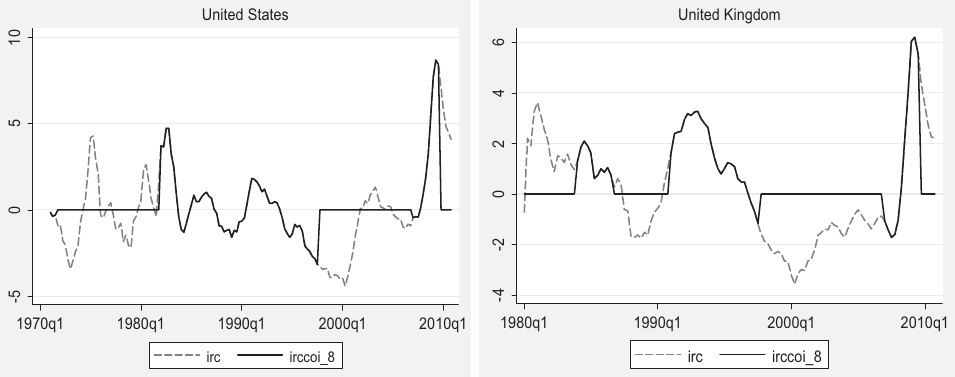
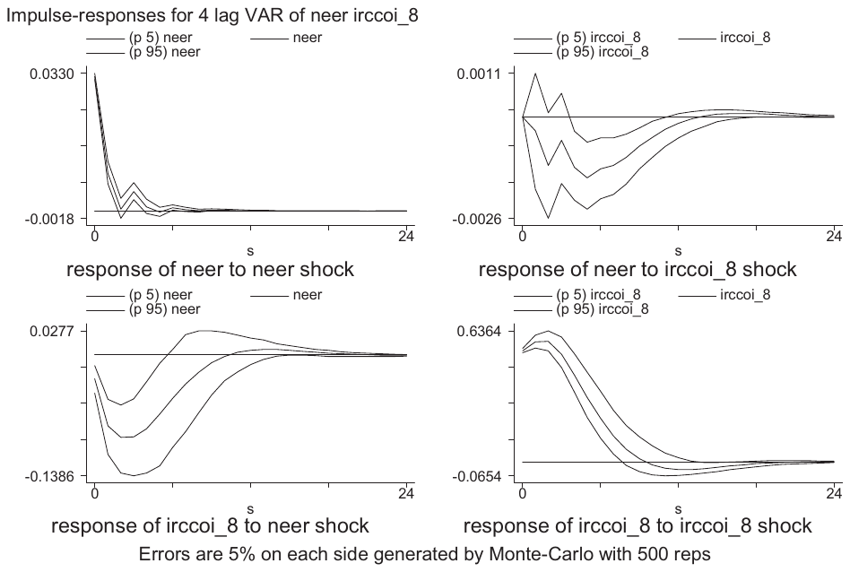
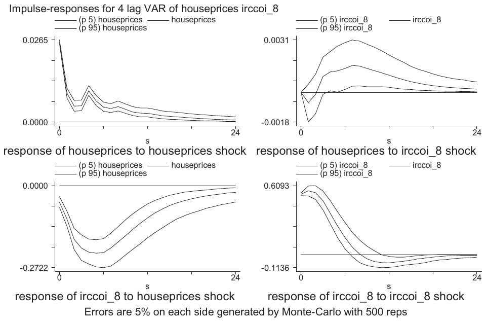
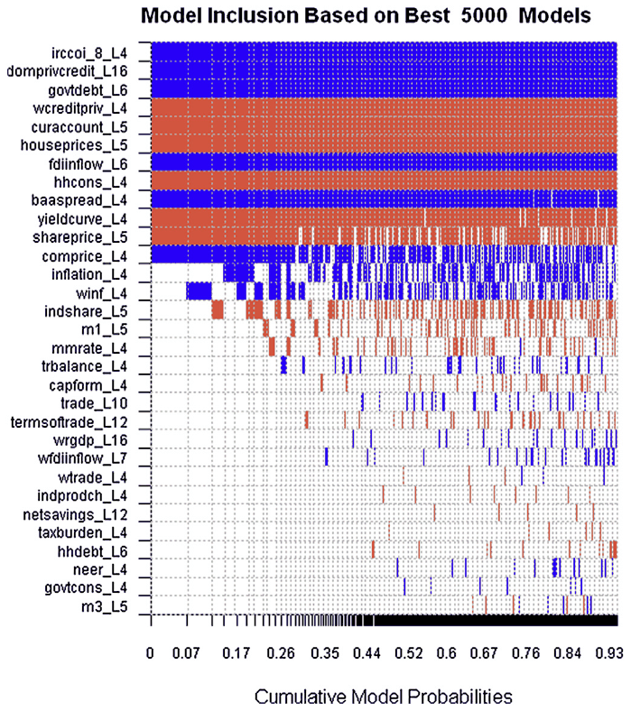
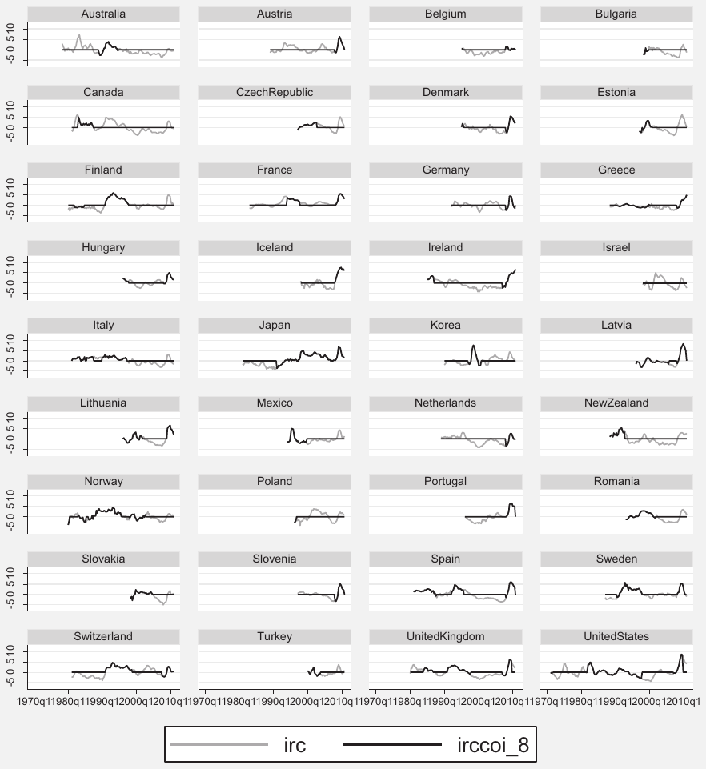

Leading indicators of crisis incidence: Evidence from developed countries
Jan Babecky, Tomas Havranek, Jakub Mateju, Marek Rusnak, Katerina Smidkova, Borek Vasicek (2013), "Leading indicators of crisis incidence: Evidence from developed countries." Journal of International Money and Finance 35: 1-19. https://doi.org/10.1016/j.jimonfin.2013.01.001.
Jan Babecký a, Tomáš Havránek a,b, Jakub Matějů a,c, Marek Rusnák a, Kateřina Šmídková a,b, Bořek Vašíček a,*
a Czech National Bank, Economic Research Department, Na příkopě 28, 11503 Prague 1, Czech Republic
b Charles University, Institute of Economic Studies, Opletalova 26, 110 00 Prague 1, Czech Republic
c CERGE-EI, Politických vězňů 7, 111 21 Prague 1, Czech Republic
JEL codes: C33, E44, E58, F47, G01
Abstract
We examine which indicators are most useful in explaining the cost of economic crises in EU and OECD countries between 1970 and 2010. To define the dependent variable we combine a measure of costs to the economy, which consists of the output and employment loss and the fiscal deficit, with a database of crisis occurrence designed specifically for this task. We take into account model uncertainty in two steps. First, for each potential leading indicator we select the relevant prediction horizon by using panel vector autoregression. Second, we identify the most useful leading indicators with Bayesian model averaging. Our results suggest that domestic housing prices, share prices, and credit growth, and some global variables, such as private credit, constitute important sources of risk.
Keywords: Early warning indicators, Bayesian model averaging, Panel VAR, Dynamic panel, Crises
1. Introduction
The recent economic crisis has brought the search for early warning indicators back into the spotlight. The literature offers various early warning models (EWMs) that try to identify leading indicators preceding various costly events, such as currency, banking, and debt crises. Despite noticeable progress in the theoretical and empirical literature on this subject in previous decades, during which EWMs have developed from single-indicator to multiple-indicator frameworks, there is still ample room for researching indicators that precede complex economic crises such as the recent one, which originated in developed economies and spread all over the world.
In this paper we construct a continuous EWM for a panel of 36 EU and OECD countries over the 1970–2010 period at quarterly frequency.1 We contribute to the literature in terms of both the scope of the study as well as the estimation methodology. First, while previous contributions focused mainly on emerging economies or large heterogeneous cross-country panels, we use a broad panel consisting solely of developed economies. Second, we employ advanced estimation techniques such as Bayesian model averaging that—to our knowledge—have not been applied in continuous early warning models so far.
Our framework mixes a continuous measure of crisis incidence with a discrete measure of crisis occurrence. The resulting model is designed to capture the real costs of a crisis to the economy. First, the incidence of crises is computed from the data to reflect the output and employment loss and the fiscal deficit (the latter is used to characterize countries' propensity to prevent costly outcomes by policy intervention). The resulting index of real costs (IRC) also captures the cyclical development of the economy. Second, we combine the IRC with the binary index of crisis occurrence (COI) to select only episodes following the (banking, debt and currency) crises identified.2 Finally, the resulting index, called the IRCCOI, is used to determine which of various potential early warning indicators mattered the most in the past 40 years for explaining costly macroeconomic developments after crisis occurrence. We argue that these most useful indicators should be monitored by policy makers in developed economies because they correspond to major risk factors behind crises.
We select 30 potential indicators, from which we want to choose the most useful ones. Our analysis is thus related to Rose and Spiegel (2011) and Frankel and Saravelos (2012), who investigate the causes of the differences in the cross-country incidence of the recent crisis. However, we extend the analysis from a cross-sectional to a panel framework, which allows us to estimate the effects of crises over time. Moreover, we also account for model uncertainty inherent in the above-mentioned continuous early warning models. We relax the assumption of a fixed horizon at which the early warning signals are issued and examine the dynamic linkages between real costs and leading indicators. This is done within the panel vector autoregression (PVAR) framework in order to select the most relevant horizon for each potential early warning indicator.
We then select the most useful leading indicators systematically using Bayesian model averaging (Raftery, 1995; Fernandez et al., 2001; Sala-i-Martin et al., 2004; Feldkircher and Zeugner, 2009). Bayesian model averaging (BMA) is a procedure that allows a subset of the most useful leading indicators of crises to be selected from the set of all possible combinations of potential warning indicators. This is a different approach from the common practice in the early warning literature, where all available (potential) indicators, selected according to the authors' judgment or theory, are used in one specification, and insignificant indicators remain part of the EWM.3 The BMA approach allows us to identify the most important risk factors that should be monitored by policy makers.
The paper is organized as follows. Section 2 motivates our analysis by identifying key lessons and challenges from the stock of previous literature related to early warning exercises. Section 3 describes the data. Section 4 presents the composition of our EWM, including its main components, the optimal lag selection upon PVAR, and the selection of variables employing BMA. Section 5 concludes.4
2. Early warning literature: lessons and challenges
The recent financial crisis revived interest in the early warning literature among researchers as well as policy makers (see, for example, Galati and Moessner, 2010; Trichet, 2010). The literature dates back to the late 1970's, when several currency crises generated interest in leading indicators (Bilson, 1979) and theoretical models (Krugman, 1979) explaining such crises. Nevertheless, it was only in the 1990s—the first golden era of the early warning literature—when a wide-ranging methodological debate started, including studies on banking and balance-of-payments problems (Kaminsky and Reinhart, 1996) and currency crashes (Frankel and Rose, 1996). This methodological debate served as a starting point for the current stream of literature motivated mainly by the recent financial crisis. The early warning literature offers many useful lessons on how to approach the new generation of EWMs. However, important challenges still prevail. In this paper, we attempt to tackle some of them, such as how to measure the incidence of crises, how to find useful early warning indicators, and how to select relevant time lags for them in the continuous model.
2.1. Costly events
There are different types of costly events, such as currency crises and banking crises. Although the ultimate goal of each EWM is to warn against these costly events, there is no consensual approach in the literature on how to define them. Crisis events are typically identified as dramatic movements of nominal variables, such as large currency depreciations (Frankel and Rose, 1996; Kaminsky and Reinhart, 1999), stock market crashes (Grammatikos and Vermeulen, 2010), and rapid decreases in asset prices (Alessi and Detken, 2011). These studies either assume that crisis events are costly in real terms, citing stylized facts from previous crises, or select those crisis events which subsequently burdened the economy with real costs. The costly event is represented either by one variable (Frankel and Rose, 1996), or by several variables combined into one index (Burkart and Coudert, 2002; Slingenberg and de Haan, 2011) with the use of alternative weighting schemes (equal weights, weights adjusted for volatility, or principal components). Alternatively, other studies specify costly events by directly measuring their real costs (Caprio and Klingebiel, 2003; Laeven and Valencia, 2008), such as loss of GDP and loss of wealth approximated by the large fiscal deficits that are run to mitigate the real costs. Some studies look at variables representing both real costs and dramatic nominal movements (Rose and Spiegel, 2011; Frankel and Saravelos, 2012).
An important aspect of defining costly events is how to capture the scale of real costs. The scale can be looked at in either a discrete or a continuous way. The former approach, according to which crises are yes/no events, is more common in the early warning literature. Real costs or nominal movements correspond to a 'yes' value when their scale exceeds a certain threshold (Kaminsky et al., 1998). Alternatively, the coding can be taken from the previous literature. Under the discrete representation of crises, two main empirical approaches commonly applied are the discrete choice approach and the signaling approach. In the class of discrete choice models, the probability of crisis is investigated. A crisis alarm is issued when the probability reaches a certain threshold. The originally applied binary logit or probit models (Berg and Pattillo, 1999) have been replaced with multinomial models (Bussiere and Fratzscher, 2006) that extend the discrete choice from two (yes/no) to more states, such as crisis, post-crisis, and tranquil periods. Under the signaling approach proposed by Kaminsky et al. (1998), a crisis alarm is issued if the warning indicator reaches a certain threshold. The threshold can be defined based on the signal-to-noise ratio to minimize type I errors (missed crises) and type II errors (false alarms).
Recently, continuous indicators of crisis have been proposed (Rose and Spiegel, 2011; Frankel and Saravelos, 2012) that allow the EWM to explain the actual scale of real costs or nominal movements without the need to decide whether the scale is sufficiently high to produce a 'yes' value. Another advantage is that continuous indicators do not suffer from a lack of variation of the dependent variable when too few crisis events are observed in the data sample. Moreover, there is no problem with dating the exact start and end periods of costly events, a problem that is difficult to overcome in discrete approaches. The disadvantage of this approach lies in its limited capacity to send straightforward ('yes/no') signals to policy makers regarding the probability of crises.
In our paper, we follow Rose and Spiegel (2011) and Frankel and Saravelos (2012) and we build a continuous EWM in which a dependent variable captures the output and employment loss and the fiscal deficit. We follow this approach because maintaining output and unemployment at their potential levels, while keeping the budget balanced, is the best approximation of policy makers' ultimate objective we are able to achieve. However, we also use information on the occurrence of crises in order to consider economic developments only after a crisis occurrence. The resulting combined index (IRCCOI) therefore combines information on both crisis incidence and crisis occurrence.
2.2. Countries in the sample
The literature of the 1990's was concerned primarily with developing economies that had suffered from currency or twin crises (see, among others, Kaminsky et al., 1998; Kaminsky, 1999). The recent literature has focused on the identification of crises and imbalances for large samples of countries, including both developing and developed economies (Rose and Spiegel, 2011; Frankel and Saravelos, 2012). Alternatively, attention has been given to developing and emerging economies (Berg et al., 2005; Bussiere, 2013; Davis and Karim, 2008) or the OECD countries (Barrell et al., 2010; Alessi and Detken, 2011).
The assessment is typically done in a cross-sectional framework, under the assumption of homogeneity of the sample despite the fact that large samples of more than 100 countries are likely to form a rather heterogeneous group. The only exception is a set of studies focusing solely on the OECD group. In this case, however, the studies face the challenge of too few observed costly events in their sample (see Laeven and Valencia, 2010; to compare the frequency of costly events, such as currency crises and debt crises, in various countries). To sum up, there is a trade-off between a sufficient number of observed costly events and sample homogeneity.
To our knowledge, studies focusing solely on all developed economies, for which the trade-off between the number of observed costly events and heterogeneity is relatively favorable and which may be of interest to EU policy makers, are not available. To reflect that, we build an EWM for a sample consisting of all EU and OECD countries,5 from which Chile, Cyprus, Luxembourg, and Malta were excluded for most parts of our analysis due to data limitations.
2.3. Potential leading indicators
The literature has used three approaches to determining which variables should be included among the potential leading indicators. First, some studies survey theoretical papers to identify potential leading indicators. These theory-based studies (Kaminsky and Reinhart, 1999) usually work with a relatively narrow set of potential indicators, but sometimes this set is enlarged to include various transformations of the same data series (Kaminsky et al., 1998). Second, more recent studies often rely on systematic literature reviews. They scrutinize previously published research for useful leading indicators and create extensive data sets by including all detected indicators, and sometimes also various transformations thereof (Rose and Spiegel, 2011; Frankel and Saravelos, 2012). Third, some studies take all the variables available in a selected database and add various transformations.
All of these approaches are subject to the risk of missing important potential indicators. However, research that explicitly tackles the problem of non-available data series is very rare (Cecchetti et al., 2010). The recent crisis revealed that various financial indicators, such as liquidity and leverage ratios, might carry useful information regarding future costly events. Nevertheless, the data series needed to compute such indicators are only available for some countries and limited time periods. For example, the ratio of regulatory capital to risk-weighted assets, credit to households, and the deposit-loan ratio for households are examples of variables that we could not include because of this problem.
In our paper, we follow the second approach and rely on a systematic literature survey. Nevertheless, we strive to reduce the risk of missing important potential indicators from our analysis by adding potential leading indicators, such as the total tax burden and several global variables, according to our own judgment. In addition, we combine several data sources, such as the IMF International Financial Statistics (IFS), the World Bank World Development Indicators (WDI), OECD, and BIS.
2.4. Time lags
The common approach to determining the time lags of potential leading indicators in EWMs is expert judgment. Most EWMs simply assume that the appropriate time horizon to look at is one or two years (Kaminsky and Reinhart, 1999). This assumption is rooted in stylized facts that describe how important economic indicators develop in the pre-crisis, crisis, and post-crisis period (Kaminsky et al., 1998; Grammatikos and Vermeulen, 2010).
Such a fixed-lag assumption may be too limiting. Individual indicators may have completely different dynamics with respect to crisis occurrence, and so considering only their current values (and not lags) may yield suboptimal explanatory power for a given dataset. Therefore, we relax this assumption and we explicitly test for the optimal time lag for each potential leading indicator separately using panel vector autoregression (Holtz-Eakin et al., 1988). Once the one-year lag assumption is relaxed, it is possible to distinguish between several horizons that might be of interest to policy makers. Specifically, we can see which variables issue a 'late warning' for a 1–3Q horizon, which ones issue an 'early' warning for a 4–8Q horizon, and which ones issue an 'ultra early' warning for a 9 + Q horizon. We try to focus on the early warning and ultra early warning horizons, within which policy actions still have a significant chance of reducing the likelihood of costly events.
2.5. Early warning indicators
Not all potential leading indicators qualify as useful early warning indicators. Studies using the discrete representation of the dependent variable and the signaling approach usually evaluate each indicator separately by minimizing either the signal-to-noise ratio (Kaminsky, 1999) or the loss function (Bussiere and Fratzscher, 2006; Alessi and Detken, 2011). Alternatively, some studies combine potential indicators into composite indexes using judgmental approaches to select index components and computing thresholds for the corresponding variables simultaneously, because even when policy makers use several EWMs in parallel, there is a risk of underestimating the probability of a crisis if more indicators are close to, but below, their individual threshold values (Borio and Lowe, 2002).
However, both composite index and multiple-indicator EWMs (Rose and Spiegel, 2011; Frankel and Saravelos, 2012) also have their problems. In the first case, the weights of the potential leading indicators are estimated and insignificant indicators (with zero weight) remain part of the index. In the latter case, the EWM is estimated and potential indicators that are insignificant remain part of the model. Consequently, various biases may reduce the predictive power of these models.
For this reason, we employ the BMA methodology to create our continuous EWM. To our knowledge, it has not been applied in (continuous) early warning models so far. BMA allows us to select the best-performing combination from all combinations of potential indicators (and their lags, as explained above). We are therefore able to determine the most important risk factors that should be monitored by policy makers.
3. Data set and stylized facts
As outlined in the previous section, there is a certain trade-off in the early warning literature between country coverage, the time dimension, the choice of variables, and data availability. One unique feature of our data set is that it focuses on a panel of developed countries which are members of the EU or the OECD or both. In total, the data set covers 36 countries, listed in Table A1 in the Appendix. Another feature of our data set is a combination of a large time dimension, rich informational content, and quarterly frequency. The sample covers the period from 1970Q1 through 2010Q4 and includes the continuous IRCCOI index, which incorporates both crisis occurrence and crisis incidence information, and potential leading indicators. For some countries and variables the data span is shorter, so the panel is unbalanced.
3.1. Index of real costs conditional on crisis occurrence
Our dependent variable, the IRCCOI, captures real costs within two years after crisis occurrence. The underlying index of real costs (IRC) is one constituent of our dependent variable, the other one being the binary crisis occurrence index (COI). Rose and Spiegel (2011) and Frankel and Saravelos (2012) use changes in GDP, industrial production, currency depreciation, and stock market performance to measure the incidence of the 2008/2009 crisis. We construct the IRC based on GDP growth, unemployment, and the fiscal deficit. Since maintaining output and unemployment at their potential levels could be viewed as the ultimate objective of policy makers, a decline of GDP growth below, and a rise of unemployment above, the corresponding potential values characterize the costs for the real economy. The inclusion of the budget balance reflects a need to detect episodes where costs in output and employment were prevented by fiscal deficits. Our definition is motivated by stylized facts according to which strong systemic events, such as the crisis of 2008/2009, are indeed characterized by a decline in output, a rise in unemployment, and large fiscal deficits that are run to mitigate the costs of the crisis.
The IRC used in our analysis is obtained as a simple average of three standardized variables: GDP growth, the unemployment rate, and the government budget deficit (the series definitions and data sources are reported in Table A2 in the Appendix). Real GDP and the budget surplus enter with negative signs to the average, so that an increase in the IRC is associated with higher costs for the real economy. For example, the IRCs for the United States and the United Kingdom are shown in Fig. 1 (the dashed line in the figure). We also considered different weighting schemes (for instance, the first principal component), but the results are qualitatively similar to those presented in the paper.
Next, in order to minimize the impact of the business cycle, we focus on the IRC conditional on crisis occurrence (IRCCOI). Our primary interest in examining the continuous index of real costs lies in exploiting as much variation in the data as possible. However, by construction, the IRC may also capture cyclical activity not necessarily related to economic crises. In order to explore the behavior of the IRC following the occurrence of systemic events only, we make use of the COI based on the binary database of economic crisis occurrence described in a companion paper (Babecky et al., 2012). This database contains information on the occurrence of banking, currency, and debt crises. The COI takes value 0 when no crisis occurred and 1 when a crisis (any of the types mentioned above) occurred. The resulting dependent variable, the IRCCOI, captures real costs within two years after each crisis occurrence. This horizon was selected because our companion paper (Babecky et al., 2012) and related literature confirm that economic crises affect the real economy mostly within two years after their occurrence.

Fig. 1 illustrates the original IRC (dashed line) and the resulting IRCCOI (solid line) on the examples of the United States and the United Kingdom.6
3.2. Leading indicators
As a starting point for the selection of useful leading indicators, we identified over 100 relevant macroeconomic and financial variables based on recent studies (e.g., Alessi and Detken, 2011; Rose and Spiegel, 2011; Frankel and Saravelos, 2012). We constructed a dataset covering 36 developed countries over 1970–2010 at quarterly frequency. Since for a number of countries the data only start in the early 1990s, the panel is unbalanced. In order to address the trade-off between sample coverage and data availability, as a rule of thumb we excluded series for which more than 50% of observations were missing. Moreover, some series were strongly correlated, differing only in statistical definition. As a result, our data set consists of 30 potential leading indicators listed in Table A2 in the Appendix (rows 4 through 33).
The majority of the series were originally available on a quarterly basis. Some series were taken from the World Bank's WDI database, available on an annual basis only. Such series were converted to quarterly frequency using the standard cubic match method. Property price indices were provided by the Bank for International Settlements and the Global Property Guide. Further details and data sources are provided in Table A2 in the Appendix.7
4. Estimation and results
4.1. Selection of optimal lags
In order to set the horizon at which leading indicators send a warning of a potential costly event, the early warning literature commonly applies expert judgment. In our evaluation of the IRCCOI, we relax this assumption and perform an explicit test for the optimal time lag between warning indicators and the materialization of real costs, employing the panel vector autoregression (PVAR) framework developed originally by Holtz-Eakin et al. (1988) for disaggregated data with a limited time span and a larger cross-sectional dimension. PVAR departs from traditional VAR estimation in the sense that it deals with individual heterogeneity potentially present in the panel data. In particular, it allows for nonstationary individual effects and is estimated by applying instrumental variables to quasi-differenced autoregressive equations in the spirit of Anderson and Hsiao (1982). The PVAR specification can be written as follows:
where i stands for cross section and t for time period, is a endogenous variable vector , represents each of the leading indicators, and the cross-sectional heterogeneity is controlled for by including fixed effects .
Given that the lags of the dependent variables are correlated with the fixed effects, forward mean-differencing (Helmert transformation) is used following Arellano and Bover (1995) to eliminate the means of all future observations for each variable–country–year combination. The estimation is performed by the GMM using untransformed variables as instruments.8 While the optimal VAR lag length in a standard VAR can be determined by statistical criteria, this is not straightforward for PVAR due to the cross-sectional heterogeneity. Balancing the need to allow a sufficient number of lags given the nature of the EWM exercise and the need to avoid over-parameterization, we set the number of lags to eight. The error bands are generated by a Monte Carlo simulation with 500 repetitions (Love and Zicchino, 2006).
The advantage of this approach is that it allows for complex dynamics and accounts for potential bidirectional causality between the IRCCOI and potential leading indicators. We apply PVAR on the variable pairs represented by the IRCCOI and each of the 30 potential leading indicators. The identification of shocks from the reduced form is done using standard Choleski decomposition with the warning indicator ordered first. Orthogonalized impulse-response functions are then used to determine the optimal horizon at which leading indicators issue the most useful signal about a potential crisis. Observing the response of the IRCCOI to a shock in each potential indicator, we set the lag of each indicator equal to the lead where the response function reaches its maximum with no prior on its response sign and no consideration of its statistical significance.9 In addition, we allow for a minimum lag length of four quarters, assuming that a variable only provides an early warning if it predicts the materialization of real costs at least one year ahead so that timely policy action can still be taken.
The impulse-response analysis determined the leads of all the tested variables between 4 (our threshold value for a variable to qualify as an early warning) and 16 quarters. To illustrate the lead selection process, two examples of impulse responses are reported in Figs. 2 and 3 below.10 Each figure corresponds to the bivariate PVAR consisting of the IRCCOI and one selected leading indicator, specifically, the nominal effective exchange rate (NEER) and house prices (HOUSEPRICES). For the NEER we observe that the maximum response of the IRCCOI to a one-standard-deviation shock to the NEER (an increase means domestic currency appreciation) appears within 3 quarters and is negative; i.e., domestic currency appreciation reduces real costs, and currency depreciation increases real costs correspondingly (Fig. 2). Nevertheless, as noted previously we assume that a variable qualifies as an early warning indicator only if it points to a crisis at least one year ahead. Consequently, we set the lag of the NEER equal to 4, where the response coefficient is somewhat lower, but still significantly negative. The negative sign of the IRCCOI response to a positive shock to the NEER suggests that the domestic currency is on a depreciation path several quarters before the materialization of the real costs of the crisis.
The maximum response of the IRCCOI to a shock to housing prices (Fig. 3) appears within 5 quarters and is again negative, indicating that an increase (decrease) in housing prices reduces (increases) real costs. Housing prices start decreasing earlier before the materialization of a crisis than the NEER and although the most significant response is observable within 5 quarters the response is significant for several years and housing prices can be potentially considered an ultra-early warning indicator. The leads of the other variables are listed in Fig. 4 and Table 1 later on in the text (on pages 18–19). We can see that there are several variables that qualify as 'ultra early' warning indicators, issuing warnings at horizons longer than two years (8 quarters)—for instance domestic private credit (16 quarters), global GDP (16 quarters), and the terms of trade (12 quarters). However, as the next section will reveal, the 'ultra early' warning variables other than domestic private credit have very low inclusion probability, so they cannot be classified as important early warning indicators.
4.2. Addressing model uncertainty

As the discussion of the literature relating to early warning systems in Section 2 suggests, there is large uncertainty about the correct set of variables that should be included in a credible EWM. Consequently, there is a need to account systematically for this model uncertainty. In the presence of many candidate variables in a regression model, traditional approaches suffer from two important drawbacks (Koop, 2003). First, putting all of the potential variables into one regression is not desirable, since the standard errors inflate if irrelevant variables are included. Second, if we test sequentially in order to exclude unimportant variables, we might end up with misleading results since there is a possibility of excluding the relevant variable each time the test is performed. A vast literature uses model averaging to address these issues (Sala-i-Martin et al., 2004; Feldkircher and Zeugner, 2009; Moral-Benito, 2011). Bayesian model averaging takes into account model uncertainty by going through all the combinations of models that can arise within a given set of variables.


We consider the following linear regression model:
where y is the index of real costs, is a constant, is a vector of coefficients, and is a white noise error term. denotes some subset of all available relevant explanatory variables X. K potential explanatory variables yield potential models. Subscript is used to refer to one specific model out of these models. The information from the models is then averaged using the posterior model probabilities that are implied by Bayes' theorem:
where is the posterior model probability, which is proportional to the marginal likelihood of the model times the prior probability of the model . We can then obtain the model weighted posterior distribution for any statistics :
We elicit the priors on the parameters and models as follows. Since and are common to all models we can use uniform priors to reflect a lack of knowledge. As for the parameters , we follow the literature and use Zellner's g prior . When choosing priors, we follow the advice of Eicher et al. (2011), who suggest using the uniform model prior and the unit information prior for the parameters, since these priors perform well in forecasting exercises (Our results are robust to the choice of alternative priors.).
| PIP | Post mean | Post SD | Conditional positive sign | St. post mean | St. post SD | |
|---|---|---|---|---|---|---|
| irccoi_8_L4 | 1.000 | 0.227 | 0.023 | 1.000 | 0.219 | 0.022 |
| domprivcredit_L16 | 1.000 | 0.017 | 0.001 | 1.000 | 0.321 | 0.027 |
| govtdebt_L6 | 1.000 | 0.015 | 0.002 | 1.000 | 0.158 | 0.022 |
| wcreditpriv_L4 | 1.000 | −0.033 | 0.004 | 0.000 | −0.286 | 0.039 |
| curaccount_L5 | 1.000 | −0.054 | 0.010 | 0.000 | −0.126 | 0.023 |
| houseprices_L5 | 1.000 | −5.587 | 0.970 | 0.000 | −0.127 | 0.022 |
| fdiinflow_L6 | 1.000 | 0.026 | 0.006 | 1.000 | 0.093 | 0.020 |
| hhcons_L4 | 0.996 | −10.069 | 2.464 | 0.000 | −0.093 | 0.023 |
| baaspread_L4 | 0.986 | 0.235 | 0.064 | 1.000 | 0.125 | 0.034 |
| yieldcurve_L4 | 0.983 | −0.032 | 0.011 | 0.000 | −0.080 | 0.027 |
| shareprice_L5 | 0.840 | −0.676 | 0.371 | 0.000 | −0.062 | 0.034 |
| comprice_L4 | 0.763 | 1.275 | 0.846 | 1.000 | 0.057 | 0.038 |
| inflation_L4 | 0.457 | 3.876 | 4.875 | 1.000 | 0.029 | 0.036 |
| winf_L4 | 0.444 | 0.007 | 0.009 | 1.000 | 0.029 | 0.037 |
| indshare_L5 | 0.361 | −0.011 | 0.016 | 0.000 | −0.022 | 0.033 |
| m1_L5 | 0.165 | −0.198 | 0.505 | 0.000 | −0.007 | 0.017 |
| mmrate_L4 | 0.154 | −0.003 | 0.007 | 0.005 | −0.011 | 0.029 |
| trbalance_L4 | 0.118 | 0.000 | 0.000 | 1.000 | 0.004 | 0.013 |
| capform_L4 | 0.075 | −0.091 | 0.377 | 0.000 | −0.003 | 0.012 |
| trade_L10 | 0.075 | 0.001 | 0.002 | 1.000 | 0.003 | 0.013 |
| termsoftrade_L12 | 0.073 | 0.000 | 0.001 | 0.000 | −0.002 | 0.010 |
| wrgdp_L16 | 0.060 | 0.003 | 0.015 | 1.000 | 0.002 | 0.011 |
| wfdiinflow_L7 | 0.047 | 0.024 | 0.136 | 0.999 | 0.001 | 0.008 |
| wtrade_L4 | 0.025 | −0.013 | 0.440 | 0.250 | 0.000 | 0.007 |
| indprodch_L4 | 0.024 | −0.008 | 0.082 | 0.000 | 0.000 | 0.004 |
| netsavings_L12 | 0.024 | 0.000 | 0.002 | 0.010 | 0.000 | 0.004 |
| taxburden_L4 | 0.024 | −0.048 | 0.524 | 0.000 | 0.000 | 0.004 |
| hhdebt_L6 | 0.024 | −0.015 | 0.165 | 0.008 | 0.000 | 0.004 |
| neer_L4 | 0.023 | 0.013 | 0.153 | 1.000 | 0.000 | 0.004 |
| govtcons_L4 | 0.019 | 0.015 | 0.263 | 1.000 | 0.000 | 0.003 |
| m3_L5 | 0.018 | 0.000 | 0.158 | 0.601 | 0.000 | 0.003 |
Note: The response variable is IRCCOI. PIP = posterior inclusion probability. The posterior mean is analogous to the estimate of the regression coefficient in a standard regression; the posterior standard deviation is analogous to the standard error of the regression coefficient in a standard regression. The last two columns display standardized coefficients. The abbreviations of the variables are listed in Table A2 in the Appendix; L denotes the lag for each variable based on panel VAR.
The robustness of a variable in explaining the dependent variable can be captured by the probability that a given variable is included in the regression. We refer to it as the posterior inclusion probability (PIP), which is computed as follows:
Finally, since it is usually not possible to go through all of the models if the number of potential explanatory variables is large (in our case with 30 variables, the model space is almost ), we employ the Markov Chain Monte Carlo Model Comparison () method developed by Madigan and York (1995). The method focuses on model regions with high posterior model probability and is thus able to approximate the exact posterior probability in a more efficient manner.
To obtain the posterior distributions of the parameters we use 4,000,000 draws from the sampler after discarding the first 1,000,000 burn-in draws. All computations are performed in the R-package BMS (Feldkircher and Zeugner, 2009). To account for any unobserved (constant) country heterogeneity, we perform fixed effects estimation.
Our dependent variable in the Bayesian model averaging exercise is the IRCCOI variable as defined above. We use the whole sample of countries and include all of the 30 potential leading indicators described in Section 3. In addition, we include the fourth lag of the dependent variable in order to control for persistence of crises in time. In what follows we present the results for the main model when the lags of the variables are chosen according to the results of the PVAR discussed in the previous subsection.11
Fig. 4 reports the best 5000 models arising from the Bayesian model averaging exercise. The models are ordered according to their posterior model probabilities, so that the best models are displayed on the left. The blue color (darker in grayscale) indicates a positive estimated coefficient, while the red color (lighter in grayscale) indicates a negative coefficient, and the white color means that the variable is not included in the respective model. Fig. 4 shows that most of the model mass includes variables that have a posterior inclusion probability (PIP) higher than 0.5.
In Table 1 we report for each indicator its posterior inclusion probability, posterior mean, posterior standard deviation, conditional posterior sign (the posterior probability of a positive coefficient conditional on its inclusion), standardized posterior mean, and standardized posterior standard deviation. The correlation between the analytical posterior model probability (PMP) and the PMP from the Markov Chain Monte Carlo Model Comparison () method for the 5000 best models is higher than 0.99, suggesting sufficient convergence of the underlying algorithm. Out of the 30 explanatory variables, 12 have a posterior inclusion probability higher than 0.5; these are the most important indicators.
In our empirical exercise we control for crisis persistence, and the autoregressive term for the dependent variable is positive with PIP = 1. This illustrates that most of the crises in our sample are protracted. Our results confirm the common view that credit growth plays an important role as an early warning indicator for the severity of crises: if the crisis is preceded by a period of excessively rapid credit growth (note that credit growth enters our specification with a lag of four years), the costs of the crisis are amplified. This is in line with the literature on the procyclicality of credit growth (Borio et al., 2001) and with the recent attempts of macro-prudential authorities to tame excessive credit growth that might lead to increased systemic risk (e.g. Basel regulations).
Our results suggest that the debt-to-GDP ratio is robustly associated with the severity of crises. Various arguments from the literature correspond to this finding. A high government debt-to-GDP ratio might be associated with increases in borrowing costs, exclusion from international capital markets, and a slump in international trade. The inflow of foreign direct investment turns out to be associated with the severity of crises as well. According to our results, countries which have enjoyed an abundance of FDI inflows tend to suffer more in crises. Similarly, periods of world credit crunch (world credit growth enters our specification with a short lag of four quarters) seem to magnify the downturns that follow economic crises. Note that while the results of Alessi and Detken (2011) suggest that global liquidity ranks among the best predictors of costly events in their early warning exercise, in our case a world credit crunch is rather a trigger of these events due to the relatively short time lag identified by the PVAR. The extent of external imbalances as measured by the current account balance to GDP ratio is also found to be robustly associated with the severity of crises. This is in line with Frankel and Saravelos (2012).
Moreover, asset price crashes (both share prices and house prices) are found to amplify the costs of downturns that follow when the financial distress caused by these crashes affects the banking system. This result corroborates the findings in Cardarelli et al. (2009). Further, a feasible proxy of global risk aversion is the BAA corporate bond spread (Codogno et al., 2003; Favero et al., 2010), and we indeed find that situations where risk aversion increases are typically accompanied by larger costs to the economy after crises, as crises that are fueled by significant risk aversion are typically followed by substantial deleveraging.
The yield curve is often viewed as a useful predictor of real economic activity (Estrella and Hardouvelis, 1991; Estrella, 2007; Fornari and Lemke, 2010). A flattening of the yield curve, either through contractionary monetary policy or through expectations of lower inflation, typically points to a deterioration of economic activity in the future. Our results are in line with this evidence.
4.3. Robustness checks
In the next step we re-estimate the model including the indicators that have posterior inclusion probability higher than 0.5 (that is, the explanatory variables that should be included in the "true" model according to BMA). Nevertheless, in dynamic panels the lagged dependent variable on the right-hand side is correlated with the error term; this is called the dynamic panel bias (Nickell, 1981). Moreover, with the macroeconomic data we use, no explanatory variable can be expected to be strictly exogenous, and the possible endogeneity should be taken into account. We treat all regressors as predetermined, because they enter the regression with lags (predetermined variables are independent of current disturbances but influenced by the past ones).
To tackle both the dynamic panel bias and the possible endogeneity of regressors, we employ the system generalized method-of-moments estimator (GMM) developed by Arellano and Bover (1995) and Blundell and Bond (1998). While GMM estimation of dynamic panel data is consistent, we admit that it may be biased in small samples with few cross-sectional units. The system GMM is a refined version of the difference GMM (Holtz-Eakin et al., 1988; Arellano and Bond, 1991), allowing for greater estimation efficiency. Because our data set involves many time periods and regressors, we only use up to two lags of regressors as instruments and collapse the instrument sets to avoid proliferation of instruments. Moreover, because our data set is unbalanced, we use orthogonal deviations for the system GMM in order to maximize sample size.
It should be noted, however, that the dynamic panel bias dwindles with increasing time span of data, and with 160 quarters in our data set the bias is likely to be quite small (Roodman, 2009). Moreover, the endogeneity problem should not be too serious since the shortest lag we use on the right-hand side of the regression is four quarters. Note also that since the model includes lagged dependent variable on the right hand side, the coefficients in Table 2 (and also in Tables 1 and 3) capture impact effects. The long run effects can be obtained by dividing each coefficient by 1 minus the coefficient on the lagged dependent variable. In the discussion we focus on the impact effects.
The results of system GMM estimation are reported in Table 2. In the first column of the table all available data are used; this corresponds to the BMA exercise from the previous subsection. The estimated regression coefficients have the same sign as in the BMA exercise and are all significant at the 1% level.
| All data | 22 core countries | Data since 1990 | |
|---|---|---|---|
| irccoi_8_L4 | 0.246*** (0.0271) | 0.297*** (0.0310) | 0.235*** (0.0286) |
| domprivcredit_L16 | 0.0249*** (0.00176) | 0.0236*** (0.00205) | 0.0274*** (0.00187) |
| govtdebt_L6 | 0.0163*** (0.00272) | 0.0178*** (0.00299) | 0.0141*** (0.00287) |
| wcreditpriv_L4 | −0.0577*** (0.00377) | −0.0509*** (0.00415) | −0.0932*** (0.00575) |
| curaccount_L5 | −0.0379*** (0.0118) | −0.0309* (0.0178) | −0.0182 (0.0125) |
| houseprices_L5 | −5.003*** (1.009) | −7.499*** (1.607) | −2.882*** (1.074) |
| fdiinflow_L6 | 0.0430*** (0.00721) | 0.0223** (0.00887) | 0.0406*** (0.00737) |
| hhcons_L4 | −11.39*** (2.405) | −19.32*** (4.029) | −7.066*** (2.547) |
| baaspread_L4 | 0.233*** (0.0530) | 0.195*** (0.0599) | 0.543*** (0.0644) |
| yieldcurve_L4 | −0.0362*** (0.00943) | −0.104*** (0.0229) | −0.0439*** (0.00983) |
| shareprice_L5 | −0.769*** (0.244) | −0.812** (0.317) | −0.415 (0.265) |
| comprice_L4 | 1.354*** (0.520) | 1.337** (0.604) | 2.981*** (0.571) |
| Constant | 0.378*** (0.0351) | 0.372*** (0.0415) | 0.658*** (0.0474) |
| Observations | 1884 | 1501 | 1710 |
| 67.91*** | 73.59*** |
Note: The null hypothesis for the statistic: all coefficients in the estimated model are the same as in the model with all available data. "22 core countries" = Australia, Austria, Belgium, Canada, Denmark, Finland, France, Germany, Greece, Ireland, Israel, Italy, Japan, Netherlands, New Zealand, Norway, Portugal, Spain, Sweden, Switzerland, United Kingdom, United States. The abbreviations of the variables are listed in Table A2 in the Appendix; L denotes the lag for each variable based on panel VAR. The response variable is IRCCOI. Standard errors are reported in parentheses. *p < 0.10, **p < 0.05, ***p < 0.01.
In the second column we estimate system GMM using data for 22 "core" countries for which long time series are available (we exclude small countries and EU and OECD members that were not considered developed in 1990). The results are broadly similar, although some of the coefficients become a bit less significant. Formally we reject the hypothesis that all coefficients are the same for these two specifications, but we do not observe differences that would affect our inference. In the third column we only use data since 1990 to see whether there are any differences in results corresponding to the subsample that covers the period associated with the Great Moderation. Similarly to the previous case we reject the hypothesis that all coefficients are the same as in the estimation using all observations, but the coefficients do not differ much. They all retain the same sign, and only the variable corresponding to current account loses significance at conventional levels, although by a narrow margin.
So far we have used quarterly data in the analysis. Some of the variables, however, are not available at the quarterly frequency and had to be interpolated from annual time series by us or by data providers. The practical usefulness of these variables for early warning exercises is thus limited. In the next step we estimate our model using annual data to see how this affects our results. Once again in this estimation we use for each variable the lag length determined by the panel VAR (now the lag length is denoted in years).
The results of system GMM using annual data are reported in Table 3. The specification in the first column uses all available observations; the second and third columns report results for the subsamples described in previous paragraphs (the subsamples are defined in the same way for annual data as for quarterly data). In the first column all estimated coefficients are statistically significant and retain their sign from the BMA exercise, with one exception: share prices. In this case, however, we prefer the estimate based on the quarterly data set because for share prices most of the variance is lost when one moves to annual data. In the remaining two specifications all estimated coefficients retain the same sign. Two of them narrowly lose statistical significance at conventional levels in the second specification (current account and FDI inflow), but overall we believe that GMM estimations presented in this subsection corroborate our inference based on BMA.
| All data | 22 core countries | Data since 1990 | |
|---|---|---|---|
| irccoi_8_L1 | 0.389*** (0.0470) | 0.329*** (0.0520) | 0.367*** (0.0488) |
| domprivcredit_L4 | 0.0113*** (0.00267) | 0.00915** (0.00403) | 0.0127*** (0.00269) |
| govtdebt_L2 | 0.0129*** (0.00476) | 0.00977* (0.00527) | 0.0100** (0.00444) |
| wcreditpriv_L1 | −0.0253*** (0.00580) | −0.0170** (0.00736) | −0.0516*** (0.00805) |
| curaccount_L2 | −0.00000524*** (0.000000812) | −0.00000325 (0.00000295) | −0.00000483*** (0.000000815) |
| houseprices_L2 | −2.272*** (0.806) | −3.466*** (1.095) | −1.616* (0.825) |
| fdiinflow_L2 | 0.0412*** (0.0131) | 0.0153 (0.0176) | 0.0345*** (0.0131) |
| hhcons_L1 | −5.437** (2.286) | −11.06*** (3.930) | −5.374** (2.348) |
| baaspread_L1 | 0.489*** (0.108) | 0.450*** (0.124) | 0.712*** (0.118) |
| yieldcurve_L1 | −0.138*** (0.0308) | −0.223*** (0.0421) | −0.0906*** (0.0330) |
| shareprice_L2 | 0.409* (0.222) | 0.523* (0.275) | 0.580** (0.231) |
| comprice_L1 | 1.760*** (0.498) | 1.744*** (0.571) | 2.036*** (0.527) |
| Constant | 0.424*** (0.110) | 0.271** (0.113) | 1.117*** (0.182) |
| Observations | 542 | 444 | 483 |
| 26.43** | 25.58** |
Note: The null hypothesis for the statistic: all coefficients in the estimated model are the same as in the model with all available data. "22 core countries" = Australia, Austria, Belgium, Canada, Denmark, Finland, France, Germany, Greece, Ireland, Israel, Italy, Japan, Netherlands, New Zealand, Norway, Portugal, Spain, Sweden, Switzerland, United Kingdom, United States. The abbreviations of the variables are listed in Table A2 in the Appendix; L denotes the lag for each variable based on panel VAR. The response variable is IRCCOI. Standard errors are reported in parentheses. *p < 0.10, **p < 0.05, ***p < 0.01.
5. Concluding remarks
Our key results can be summarized as follows. We find that about a third of the potential early warning indicators are useful for explaining the incidence of economic crises in EU and OECD countries in the past 40 years. The key early warning signal comes from growth in domestic credit to the private sector at the horizon of four years. Other identified indicators issue a warning signal 5 or 6 quarters ahead of the materialization of a crisis. For this reason, an increase in government debt, the current account deficit, and FDI inflow, or a fall in house prices and share prices could be considered late early warning indicators. Nevertheless, in practice even late early warning indicators may be useful in identifying the onset of a crisis in real time. By construction, our database of crisis occurrence compiled ex-post has the benefit of hindsight, which would not be available to policy makers when assessing the risks to macroeconomic stability in real time. Thus, even late warning indicators bordering with the symptoms of crises could be viewed as signals containing useful early warning information. Taken as a whole, the above variables—which include, most notably, government debt, the current account deficit, and housing prices—are non-negligible risk factors which are worth monitoring.
Our results are more optimistic than those of Rose and Spiegel (2011), who investigate which of the previously suggested early warning indicators are effective in explaining the cross-country incidence of the late-2000's crisis. Rose and Spiegel (2011) find that equity prices are relatively useful in explaining crisis incidence, but in general their message is skeptical. In comparison to Frankel and Saravelos (2012), who present more optimistic findings concerning the usefulness of early warning indicators (specifically they report that the level of reserves and real appreciation are effective leading indicators), we find different indicators more useful. As far as time lags are concerned, our findings are distinct from the previous literature due to the explicit identification of optimal time lags. As a result, we have been able to identify a truly early warning indicator, growth in domestic credit to the private sector, which issues a warning at the horizon of four years, which is a much longer horizon than the commonly assumed 1–2 years.
These differences in results can be explained by two major methodological innovations. First, we make use of a rich panel structure drawing on the real costs of crises over a period of up to four decades for a more homogeneous sample of developed economies rather than focusing on the effects of a single crisis on a large cross-section of heterogeneous economies. Second, we relax the assumption of a common prediction horizon for all potential variables and employ Bayesian model averaging to take into account model uncertainty.
Acknowledgments
We thank Vladimir Borgy, Peter Claeys, Carsten Detken, Peter Dunne, Stijn Ferrari, Jan Frait, Michal Hlavacek, João Sousa, and anonymous referees of the European Central Bank Working Papers Series and the Journal of International Money and Finance for their helpful comments. The paper benefited from discussion at seminars at Banque de France, the Central Bank of Ireland, and the Czech National Bank; the workshop of the second workstream of the European System of Central Banks (ESCB) Macroprudential Research (MaRs) Network, and the First Conference of the MaRs Network in Frankfurt. We are grateful to the members of the ESCB for their help with creating the database of crisis occurrence. We thank Renata Zachova and Viktor Zeisel for their excellent research assistance. We are grateful to Inessa Love for sharing her code for the panel VAR estimation and to the Global Property Guide for providing us data on house prices. The opinions expressed in this paper are solely those of the authors and do not necessarily reflect the views of any member of the ESCB. This work was supported by the Czech National Bank Research Project No. C3/2011 and the Grant Agency of the Czech Republic (project No. P402/11/1487).
Appendix A. Data
| No. | Country | EU | OECD |
|---|---|---|---|
| 1 | Australia | OECD | |
| 2 | Austria | EU | OECD |
| 3 | Belgium | EU | OECD |
| 4 | Bulgaria | EU | |
| 5 | Canada | OECD | |
| 6 | Czech Republic | EU | OECD |
| 7 | Denmark | EU | OECD |
| 8 | Estonia | EU | OECD |
| 9 | Finland | EU | OECD |
| 10 | France | EU | OECD |
| 11 | Germany | EU | OECD |
| 12 | Greece | EU | OECD |
| 13 | Hungary | EU | OECD |
| 14 | Iceland | OECD | |
| 15 | Ireland | EU | OECD |
| 16 | Israel | OECD | |
| 17 | Italy | EU | OECD |
| 18 | Japan | OECD | |
| 19 | Korea | OECD | |
| 20 | Latvia | EU | |
| 21 | Lithuania | EU | |
| 22 | Mexico | OECD | |
| 23 | Netherlands | EU | OECD |
| 24 | New Zealand | OECD | |
| 25 | Norway | OECD | |
| 26 | Poland | EU | OECD |
| 27 | Portugal | EU | OECD |
| 28 | Romania | EU | |
| 29 | Slovakia | EU | OECD |
| 30 | Slovenia | EU | OECD |
| 31 | Spain | EU | OECD |
| 32 | Sweden | EU | OECD |
| 33 | Switzerland | OECD | |
| 34 | Turkey | OECD | |
| 35 | United Kingdom | EU | OECD |
| 36 | United States | OECD |
| No. | Variable | Description | Transformation | Main source |
|---|---|---|---|---|
| Components of the index of real costs (IRC) | ||||
| 1 | govtbalance | Government balance (%GDP) | None | OECD |
| 2 | rgdp | GDP, real, seasonally adjusted | % yoy | OECD, statistical offices |
| 3 | unemployment | Unemployment rate (%) | None | OECD |
| Potential leading indicators | ||||
| 1 | baaspread | BAA corporate bond spread | None | Reuters |
| 2 | capform | Gross total fixed capital formation (constant prices) | % qoq | Statistical offices, OECD |
| 3 | comprice | Commodity prices | % qoq | Commodity Research Bureau |
| 4 | curaccount | Current account (%GDP) | None | OECD, WDI |
| 5 | domprivcredit | Domestic credit to private sector (%GDP) | None | WDI |
| 6 | fdiinflow | FDI net inflows (%GDP) | None | WDI |
| 7 | govtcons | Government consumption (constant prices) | % qoq | OECD, statistical offices |
| 8 | govtdebt | Government debt (%GDP) | None | WDI, ECB |
| 9 | hhcons | Private final consumption expenditure (constant prices) | % qoq | Statistical offices |
| 10 | hhdebt | Gross liabilities of personal sector | % qoq | National central banks, Oxford Economics |
| 11 | houseprices | House price index | % qoq | BIS, Eurostat, Global Property Guide |
| 12 | indprodch | Industrial production index | % qoq | Statistical offices |
| 13 | indshare | Industry share (%GDP) | None | WDI, EIU |
| 14 | inflation | Consumer price index | % qoq | Statistical offices, national central banks |
| 15 | m1 | M1 | % qoq | National central banks |
| 16 | m3 | M3 | % qoq | National central banks |
| 17 | mmrate | Money market interest rate | None | IFS |
| 18 | neer | Nominal effective exchange rate | % qoq | IFS |
| 19 | netsavings | Net national savings (%GNI) | None | WDI |
| 20 | shareprice | Stock market index | % qoq | Reuters, stock exchanges |
| 21 | taxburden | Total tax burden (%GDP) | None | OECD, statistical offices |
| 22 | termsoftrade | Terms of trade | None | Statistical offices |
| 23 | trade | Trade (%GDP) | None | WDI |
| 24 | trbalance | Trade balance | 1st dif | Statistical offices, national central banks |
| 25 | wcreditpriv | Global domestic credit to private sector (%GDP) | None | WDI |
| 26 | wfdiinflow | Global FDI inflow (%GDP) | None | WDI |
| 27 | winf | Global inflation | None | IFS |
| 28 | wrgdp | Global GDP | % qoq | IFS |
| 29 | wtrade | Global trade (constant prices) | % qoq | IFS |
| 30 | yieldcurve | Long term bond yield – money market interest rate | None | National central banks |
Note: All variables (except housing prices) were downloaded from Datastream. The variables are listed in alphabetical order.

REFERENCES
Some entries below were printed without a link. Where a Crossref record matches one and no other record plausibly could, its DOI is shown; ambiguous references are left as they were printed.
- Alessi, L., Detken, C., 2011. Quasi real time early warning indicators for costly asset price boom/bust cycles: a role for global liquidity. European Journal of Political Economy 27 (3), 520–533.
- Anderson, T.W., Hsiao, C., 1982. Formulation and estimation of dynamic models using panel data. Journal of Econometrics 18 (1), 47–82.
- Arellano, M., Bond, S., 1991. Some tests of specification for panel data: Monte Carlo evidence and an application to employment equations. Review of Economic Studies 58 (2), 277–297.
- Arellano, M., Bover, O., 1995. Another look at the instrumental variable estimation of error-components models. Journal of Econometrics 68 (1), 29–51.
- Babecky, J., Havranek, T., Mateju, J., Rusnak, M., Smidkova, K., Vasicek, B., 2012. Banking, debt, and currency crises: early warning indicators for developed countries. European Central Bank Working Paper, No. 1485.
- Barrell, R., Davis, E.P., Karim, D., Liadze, I., 2010. Bank regulation, property prices and early warning systems for banking crises in OECD countries. Journal of Banking & Finance 34 (9), 2255–2264.
- Berg, A., Borensztein, E., Pattillo, C., 2005. Assessing early warning systems: how have they worked in practice? IMF Staff Papers 52 (3), 462–502.
- Berg, A., Pattillo, C., 1999. Are currency crises predictable? a test. IMF Staff Papers 46 (2), 107–138.
- Bilson, J.F.O., 1979. Leading indicators of currency devaluations. Columbia Journal of World Business 14 (4), 62–76.
- Blundell, R., Bond, S., 1998. Initial conditions and moment restrictions in dynamic panel data models. Journal of Econometrics 87 (1), 115–143.
- Borio, C., Furfine, C., Lowe, P., 2001. Procyclicality of the financial system and financial stability issues and policy options. In: Marrying the Macro- and Micro-prudential Dimensions of Financial Stability, BIS Papers, No. 1, pp. 1–57.
- Borio, C., Lowe, P., 2002. Assessing the risk of banking crisis. BIS Quarterly Review, 43–54. December.
- Burkart, O., Coudert, V., 2002. Leading indicators of currency crises for emerging countries. Emerging Markets Review 3 (2), 107–133.
- Bussiere, M., Fratzscher, M., 2006. Towards a new early warning system of financial crises. Journal of International Money and Finance 25 (6), 953–973.
- Bussiere, M., 2013. Balance of payment crises in emerging markets: how early were the 'early' warning signals? Applied Economics 45 (12), 1601–1623.
- Cardarelli, R., Elekdag, S., Lall, S., 2009. Financial Stress, Downturns, and Recoveries. IMF Working Paper No. 09/100.
- Caprio, G., Klingebiel, D., January 22, 2003. Episodes of Systemic and Borderline Financial Crises. World Bank. http://go.worldbank.org/5DYGICS7B0.
- Cecchetti, S.G., Fender, I., McGuire, P., 2010. Toward a Global Risk Map. BIS Working Paper No. 309.
- Codogno, L., Favero, C., Missale, A., 2003. Yield spreads on EMU government bonds. Economic Policy 18 (37), 503–532.
- Crespo-Cuaresma, J., Slacik, T., 2009. On the determinants of currency crisis: the role of model uncertainty. Journal of Macroeconomics 31 (4), 621–632.
- Davis, E.P., Karim, D., 2008. Comparing early warning systems for banking crises. Journal of Financial Stability 4 (2), 89–120.
- Eicher, T.S., Papageorgiou, C., Raftery, A.E., 2011. Default priors and predictive performance in Bayesian model averaging, with application to growth determinants. Journal of Applied Econometrics 26 (1), 30–55. 10.1002/jae.1112
- Estrella, A., 2007. Why does the yield curve predict output and inflation? Economic Journal 115 (505), 722–744.
- Estrella, A., Hardouvelis, G.A., 1991. The term structure as a predictor of real economic activity. The Journal of Finance 46 (2), 555–576.
- Favero, C., Pagano, M., von Thadden, E.L., 2010. How does liquidity affect government bond yields? Journal of Financial and Quantitative Analysis 45 (1), 107–134.
- Feldkircher, M., Zeugner, S., 2009. Benchmark Priors Revisited: On Adaptive Shrinkage and the Supermodel Effect in Bayesian Model Averaging. IMF Working Paper No. 09/202.
- Fernandez, C., Ley, E., Steel, M., 2001. Benchmark priors for Bayesian model averaging. Journal of Econometrics 100 (2), 381–427.
- Fornari, F., Lemke, W., 2010. Predicting Recession Probabilities with Financial Variables over Multiple Horizons. ECB Working Paper No. 1255.
- Frankel, J.A., Rose, A.K., 1996. Currency crashes in emerging markets: an empirical treatment. Journal of International Economics 41 (3–4), 351–366.
- Frankel, J.A., Saravelos, G., 2012. Can leading indicators assess country vulnerability? Evidence from the 2008–09 global financial crisis. Journal of International Economics 87 (2), 216–231.
- Galati, G., Moessner, R., 2010. Macroprudential Policy—a Literature Review. DNB Working Paper No. 267. Netherlands Central Bank.
- Grammatikos, T., Vermeulen, R., 2010. Transmission of the Financial and Sovereign Debt Crises to the EMU: Stock Prices, CDS Spreads and Exchange Rates. DNB Working Paper No. 287. Netherlands Central Bank.
- Holtz-Eakin, D., Newey, W., Rosen, H.S., 1988. Estimating vector autoregressions with panel data. Econometrica 56 (6), 1371–1395.
- Kaminsky, G.L., 1999. Currency and Banking Crises: the Early Warnings of Distress. IMF Working Paper No. 99/178.
- Kaminsky, G.L., Lizondo, S., Reinhart, C.M., 1998. The leading indicators of currency crises. IMF Staff Papers 45 (1), 1–48.
- Kaminsky, G.L., Reinhart, C.M., 1996. The Twin Crises: the Causes of Banking and Balance-of-payments Problems. Board of Governors of the Federal Reserve System, International Finance Discussion Paper No. 544.
- Kaminsky, G.L., Reinhart, C.M., 1999. The twin crises: the causes of banking and balance-of-payments problems. American Economic Review 89 (3), 473–500.
- Koop, G., 2003. Bayesian Econometrics. John Wiley and Sons.
- Krugman, P., 1979. A model of balance-of-payments crises. Journal of Money, Credit and Banking 11 (3), 311–325.
- Laeven, L., Valencia, F., 2008. Systemic Banking Crises: a New Database. IMF Working Paper No. 08/224.
- Laeven, L., Valencia, F., 2010. Resolution of Banking Crises: the Good, the Bad, and the Ugly. IMF Working Paper No. 10/146.
- Love, I., Zicchino, L., 2006. Financial development and dynamic investment behavior: evidence from panel VAR. The Quarterly Review of Economics and Finance 46 (2), 190–210.
- Madigan, D., York, J., 1995. Bayesian graphical models for discrete data. International Statistical Review 63 (2), 215–232. 10.2307/1403615
- Moral-Benito, E., 2011. Model Averaging in Economics. Bank of Spain Working Paper No. 1123.
- Nickell, S.J., 1981. Biases in dynamic models with fixed effects. Econometrica 49 (6), 1417–1426. 10.2307/1911408
- Raftery, A.E., 1995. Bayesian model selection in social research. Sociological Methodology 25, 111–163.
- Roodman, D., 2009. How to do xtabond2: an introduction to difference and system GMM in Stata. Stata Journal 9 (1), 86–136.
- Rose, A.K., Spiegel, M.M., 2011. Cross-country causes and consequences of the 2008 crisis: an update. European Economic Review 55 (3), 309–324.
- Sala-i-Martin, X., Doppelhofer, G., Miller, R., 2004. Determinants of long-term growth: a Bayesian averaging of classical estimates (BACE) approach. American Economic Review 94 (4), 813–835.
- Slingenberg, J.W., de Haan, J., 2011. Forecasting Financial Stress. DNB Working Paper No. 292. Netherlands Central Bank.
- Trichet, J.C., 2010. Macro-prudential regulation as an approach to contain systemic risk: economic foundations, diagnostic tools and policy instruments. In: Speech at the 13th Conference of the ECB-CFS Research Network, Frankfurt am Main, September 27, 2010. http://www.ecb.int/press/key/date/2010/html/sp100927.en.html.
ENDNOTES
- In earlier versions of the paper we considered all EU and OECD countries. In the current version we exclude Chile, Cyprus, Luxembourg, and Malta due to data limitations. The list of 36 countries is reported in Table A1 in the Appendix.
- The crisis occurrence database is described in more detail in Babecky et al. (2012). The data on EU countries were collected with the help of the ESCB Macro-prudential Research Network (MaRs). See http://www.ecb.int/home/html/researcher_mars.en.html for detailed information about the MaRs.
- Crespo-Cuaresma and Slacik (2009) and Babecky et al. (2012) apply BMA in the context of discrete models of crisis occurrence. We extend the application of BMA to models containing a continuous dependent variable, which the BMA method was originally designed for.
- An online appendix is available at http://ies.fsv.cuni.cz/en/node/372. The appendix illustrates (i) the dependent variable (the index of real costs conditional on crisis occurrence) and the underlying unconditional index of real costs for all countries and (ii) a full set of results for the optimal lag selection upon PVAR.
- There are alternative definitions of a 'developed' economy. For the sake of simplicity, we consider all EU and OECD members as of 2011. It follows that some countries graduated from the emerging or transition into the developed economy category between 1970 and 2010.
- A preview of the corresponding figures for all sample countries is illustrated in Fig. A1 in the Appendix, while the figures themselves are available in the online appendix.
- Notice that our subsequent examination of leading indicators is not a real-time analysis due to publication lags of the data.
- The Helmert-transformed variables are orthogonal to the lagged regressors and the latter can be used as instruments for the GMM estimation.
- The coefficient estimates and the impulse-response functions are conditioned on the variables included in the PVAR and, given the Choleski decomposition, also on the ordering of the variables. Given that PVAR estimates an elevated number of coefficients and there are numerous potential crisis indicators, they had to be included one by one. Nevertheless, the omission bias is in principle controlled for by including several lags of the IRCCOI, which arguably trace the effects of omitted variables. We tested alternative Choleski ordering where the IRCCOI appears in the system before each potential crisis predictor, but failed to find any different pattern.
- A full set of impulse responses for all leading indicators is available in the online appendix.
- In principle, one could choose directly the appropriate lags within the BMA model, but a number of issues make this unfeasible. First, since BMA weighs the models according to their fit and the number of variables included, it does not account for the potential multicollinearity of different lags of the same variable. Second, including a number of lags for each variable would yield an enormous model space even by model-averaging standards (e.g. including 16 lags of each variable would yield possible models). Third, one could also attempt to choose from the models where only one lag from each variable appears; nevertheless, to our knowledge there are no available off-the-shelf algorithms that would allow us to do this in a straightforward manner. The last reason for choosing the optimal lag length within the PVAR framework is that BMA would not allow dynamic interrelations between the variables.